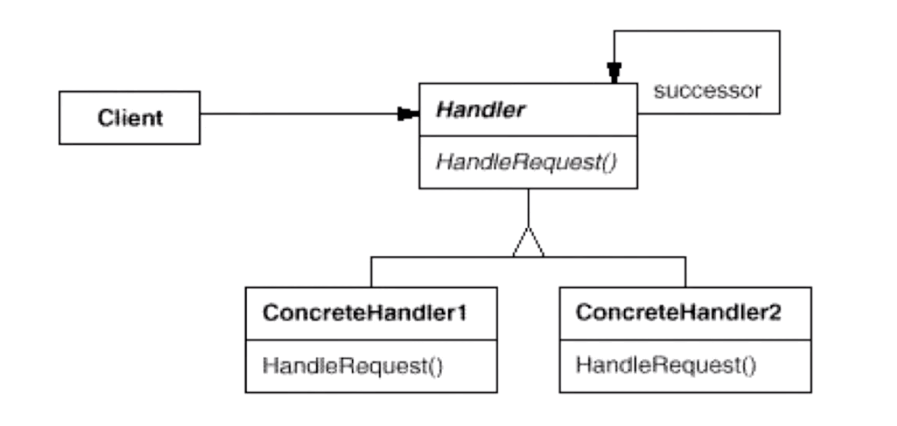

“数据结构类”设计模式（C++）
常常有一些组件在内部具有特定的数据结构，如果让客户程序依赖这些特定的数据结构，将极大地破坏组件的复用。这时候，将这些特定数据结构封装在内部，在外部提供统一的接口，来实现与特定数据结构无关的访问，是一种行之有效的解决方案。
Composite 模式（Composite）
软件在某些情况下，客户代码过多地依赖于对象容器复杂的内部实现结构，对象容器内部实现结构（而非抽象接口）的变化将引起客户代码的频繁变化，带来了代码的高维护成本、高扩展成本等弊端。如何将“客户代码与复杂的对象容器结构”解耦？让对象容器自己来实现自身的复杂结构，从而使客户代码就像处理简单对象一样来处理复杂的对象容器？
模式定义：将对象组合成树形结构以表示“部分—整体”的层次结构。Composite 使得用户对单个对象和组合对象的使用具有一致性（稳定）。
struct Component {
virtual void process() = 0;
virtual ~Component() {}
};
class Composite : public Component {
std::list<std::shared_ptr<Component>> elements;
public:
Composite() : Component() {};
void add(std::shared_ptr<Component> element) {
elements.push_back(element);
}
void remove(std::shared_ptr<Component> element) {
elements.remove(element);
}
void process() override {
std::cout << "[process Composite]" << std::endl;
for (auto &e : elements) {
e->process(); // Composite / Leaf;
}
}
};
class Leaf : public Component {
void process() override {
std::cout << "[process Leaf]" << std::endl;
};
};
int main(int argc, char** argv) {
auto root = std::make_shared<Composite>();
auto CompositeA = std::make_shared<Composite>();
auto leafA = std::make_shared<Leaf>();
auto leafB = std::make_shared<Leaf>();
CompositeA->add(leafA);
CompositeA->add(leafB);
root->add(CompositeA);
CompositeA->process(); // 处理该 Composite 节点，及其所有子节点（递归）；
return 0;
}
总结：
- Composite 模式采用树形结构来实现普遍存在的对象容器，从而将“一对多”的关系转化为“一对一”关系，使得客户代码可以一致地（复用）处理对象和对象容器，无需关心处理的是单个的对象，还是组合的对象容器；
- 将“客户代码与复杂的对象容器结构”解耦是 Composite 模式的核心思想。解耦之后，客户代码将与纯粹的抽象接口 —— 而非对象容器的内部实现结构发生依赖，从而更能够“应对变化”；
- Composite 模式在具体实现中，可以让父对象中的子对象反向追溯。如果父对象有频繁的遍历要求，可使用缓存技巧来改善效率；
迭代器模式（Iterator）
在软件构建过程中，集合对象内部结构常常变化各异。但对于这些集合对象，我们希望在不暴露其内部结构的同时，可以让外部客户代码透明地访问其中包含的元素；同时这种“透明遍历”也为“同一种算法在多种集合对象上进行操作”提供了可能。使用 OOP 将这种遍历机制抽象为“迭代器对象”，为“应对变化中的集合对象”提供了一种优雅的方式。（听起来就是 C++ 迭代器的概念，外加泛型算法）
模式定义：提供一种方法顺序访问一个聚合对象中的各个元素，而又不暴露（稳定）该对象的内部表示。
* 该模式（指 OOP 版本的实现方式）在 C++ 里已经过时，由于虚函数表的存在，导致虚函数的调用（next \ first \ isDone 等）导致的极大性能开销。新的 C++ STL 方式采用了模板多态（编译时）而非运行时多态。
总结：
- 迭代抽象：访问一个聚合对象的内容而无需暴露它的内部表示；
- 迭代多态：为遍历不同的集合结构提供统一的接口，从而支持同样的算法在不同集合结构上进行操作；
- 迭代器的健壮性考虑：遍历的同时更改迭代器所在的集合结构，会导致问题；
职责链模式（Chain of Responsibility）
在软件构建过程中，一个请求可能被多个对象处理，但是每个请求在运行时只能有一个接受者，如果显式指定，将必不可少地带来请求发送者与接受者的紧耦合。如何使请求的发送者不需要指定具体的接受者？让请求的接受者自己在运行时来决定如何处理请求，从而使两者解耦。（有点像 DOM 事件的冒泡，挂监听器捕获、也像消费队列的形式，又像 Koajs 和 Expressjs 里的中间件。其实都是一样的。）

模式定义：使多个对象都有机会处理请求，从而避免请求的发送者和接受者之间的耦合关系。将这些对象连成一条链，并沿着这条链传递请求，直到有一个对象处理它为止。
struct Request {};
struct ChainHandler {
std::shared_ptr<ChainHandler> nextChainHandler;
void sendRequestToNextHandler(Request& req) {
if (nextChainHandler != nullptr) {
nextChainHandler->handle(req);
}
}
virtual void handle(Request& req) = 0;
};
struct ChainHandlerA : public ChainHandler {
void handle(Request& req) override {
std::cout << "[ChainHandler A]" << std::endl;
sendRequestToNextHandler(req);
}
};
struct ChainHandlerB : public ChainHandler {
void handle(Request& req) override {
std::cout << "[ChainHandler B]" << std::endl;
sendRequestToNextHandler(req);
}
};
struct Chain {
std::forward_list<std::shared_ptr<ChainHandler>> lst; // 单向链表；
void process(Request& req) {
for (const auto& handler : lst) {
handler->handle(req); // 依次调用链中的 handler 来处理请求；
}
}
};
int main(int argc, char** argv) {
Request req;
Chain chain;
chain.lst.push_front(std::make_shared<ChainHandlerA>());
chain.lst.push_front(std::make_shared<ChainHandlerB>());
chain.process(req);
return 0;
}
总结：
- 职责链模式的应用场合在于“一个请求可能有多个接受者，但是最后真正的接受者只有一个”，这时候请求发送者与接受者的耦合有可能出现“变化脆弱”的症状，职责链的目的就是将二者解耦，从而更好地应对变化；
- 应用了职责链模式后，对象的职责分派将更具灵活性。我们可以在运行时动态地添加/修改请求的处理职责；
- 如果请求传递到职责链的末尾仍得不到处理，应该有一个合理的缺省机制。这也是每一个接受对象的责任，而不是发出请求的对象的责任；
- Composite：组合成树形结构，无论是处理中间节点还是叶子节点，均采用一致的接口形式；
- Iterator：为容器的遍历，提供统一的运行时接口；
- Chain of Responsibility：单链表形式的处理流程，包含了多个处理节点；